Innsbruck
Upscaled source

Ultra Minimal
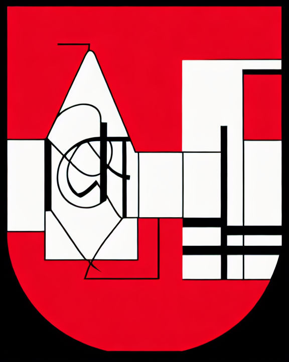
A radical reinterpretation of the Innsbruck coat of arms as a contemporary abstract brand mark. Preserve only a vertical shield silhouette and the civic identity. Remove medieval ornament, towers, sub-shields, figures, scrollwork, and text. Turn it into a minimal geometric symbol that feels like a cutting-edge identity system. Style direction: ultra-minimal flat emblem, two-tone geometry, Swiss-style precision, generous negative space, crisp corporate identity, highly simplified. No text, no watermark, no medieval ornament.
Abstract Mountain
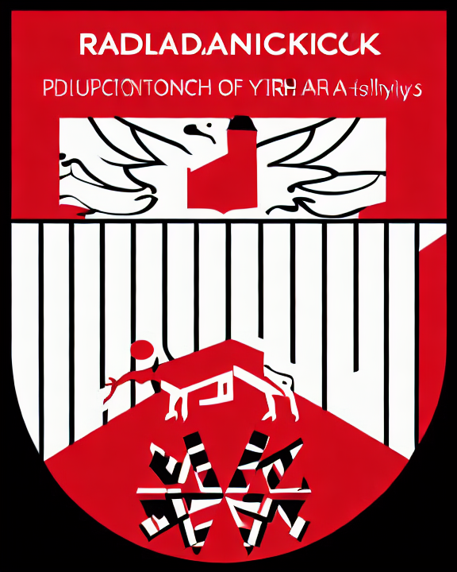
A radical reinterpretation of the Innsbruck coat of arms as a contemporary abstract brand mark. Preserve only a vertical shield silhouette and the civic identity. Remove medieval ornament, towers, sub-shields, figures, scrollwork, and text. Turn it into a minimal geometric symbol that feels like a cutting-edge identity system. Style direction: abstract alpine mountain geometry, sharp faceted planes, summit silhouette, poster-like composition, modern outdoor brand, bold and sparse. No text, no watermark, no medieval ornament.
Monoline Icon
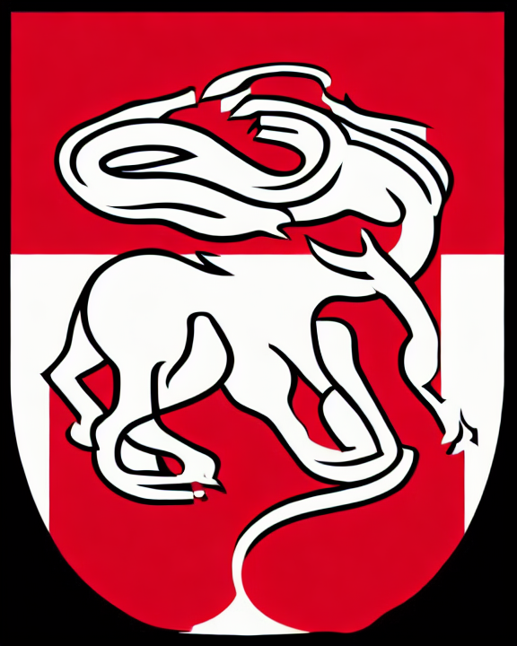
A radical reinterpretation of the Innsbruck coat of arms as a contemporary abstract brand mark. Preserve only a vertical shield silhouette and the civic identity. Remove medieval ornament, towers, sub-shields, figures, scrollwork, and text. Turn it into a minimal geometric symbol that feels like a cutting-edge identity system. Style direction: single-line icon symbol, continuous stroke, minimal contour drawing, elegant and modern, logo-ready, no ornament. No text, no watermark, no medieval ornament.
Paper Cut
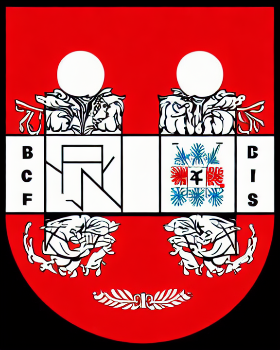
A radical reinterpretation of the Innsbruck coat of arms as a contemporary abstract brand mark. Preserve only a vertical shield silhouette and the civic identity. Remove medieval ornament, towers, sub-shields, figures, scrollwork, and text. Turn it into a minimal geometric symbol that feels like a cutting-edge identity system. Style direction: paper-cut poster, layered flat shapes, torn edges, tactile yet clean, modern editorial design, abstract civic badge. No text, no watermark, no medieval ornament.
Ink Stamp
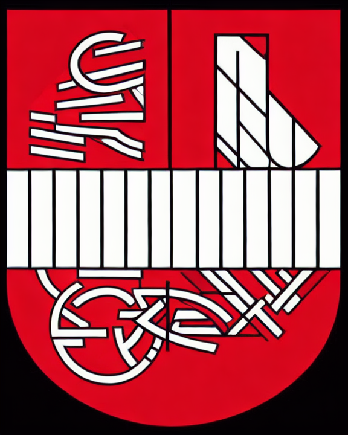
A radical reinterpretation of the Innsbruck coat of arms as a contemporary abstract brand mark. Preserve only a vertical shield silhouette and the civic identity. Remove medieval ornament, towers, sub-shields, figures, scrollwork, and text. Turn it into a minimal geometric symbol that feels like a cutting-edge identity system. Style direction: monochrome ink-stamp symbol, worn paper texture, strong black form, simple and authoritative, very minimal. No text, no watermark, no medieval ornament.
Negative Space
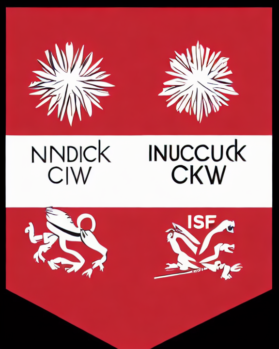
A radical reinterpretation of the Innsbruck coat of arms as a contemporary abstract brand mark. Preserve only a vertical shield silhouette and the civic identity. Remove medieval ornament, towers, sub-shields, figures, scrollwork, and text. Turn it into a minimal geometric symbol that feels like a cutting-edge identity system. Style direction: negative-space emblem, hollow center, bold outer silhouette, smart and contemporary, pure shape language. No text, no watermark, no medieval ornament.
Kitzbühel
Upscaled source
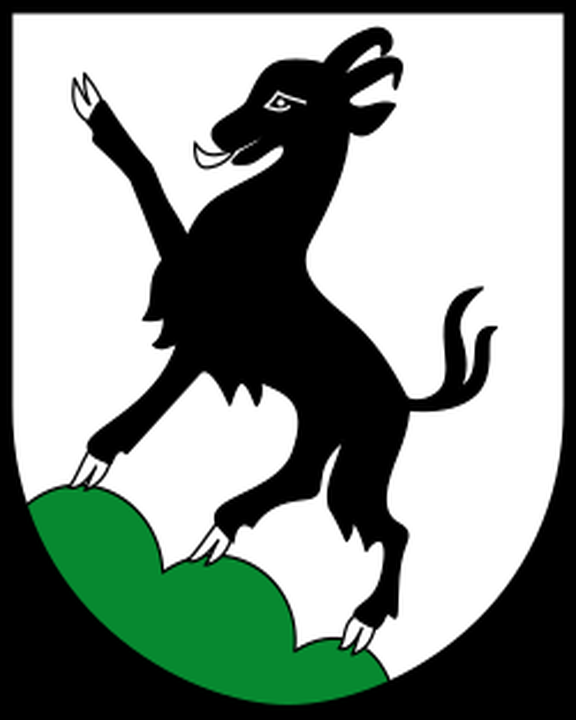
Ultra Minimal
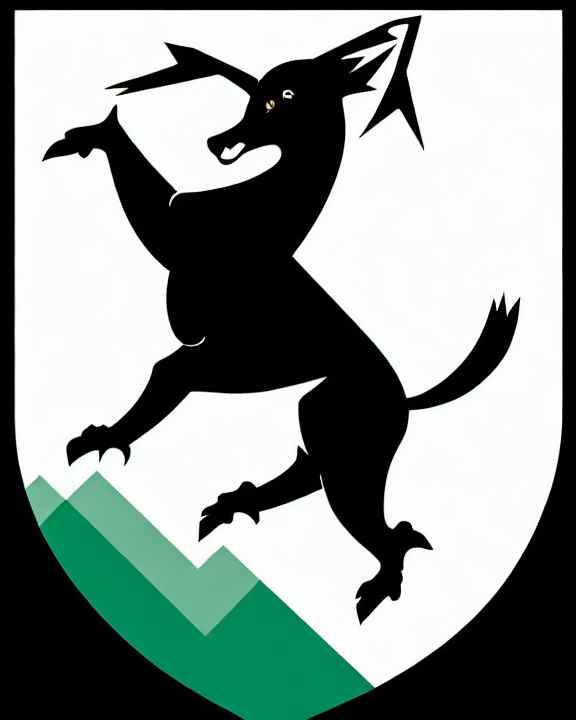
A radical reinterpretation of the Kitzbühel coat of arms as a contemporary abstract alpine brand mark. Preserve only a vertical shield silhouette and the alpine civic identity. Remove medieval ornament, towers, sub-shields, figures, scrollwork, and text. Turn it into a minimal geometric symbol that feels like a cutting-edge identity system. Style direction: ultra-minimal flat emblem, two-tone geometry, Swiss-style precision, generous negative space, crisp corporate identity, highly simplified. No text, no watermark, no medieval ornament.
Abstract Mountain
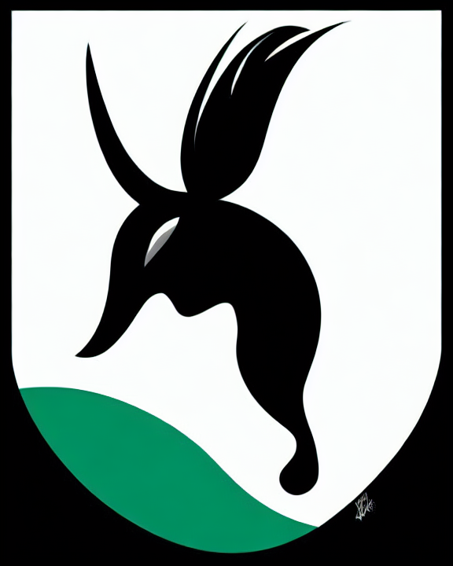
A radical reinterpretation of the Kitzbühel coat of arms as a contemporary abstract alpine brand mark. Preserve only a vertical shield silhouette and the alpine civic identity. Remove medieval ornament, towers, sub-shields, figures, scrollwork, and text. Turn it into a minimal geometric symbol that feels like a cutting-edge identity system. Style direction: abstract alpine mountain geometry, sharp faceted planes, summit silhouette, poster-like composition, modern outdoor brand, bold and sparse. No text, no watermark, no medieval ornament.
Monoline Icon
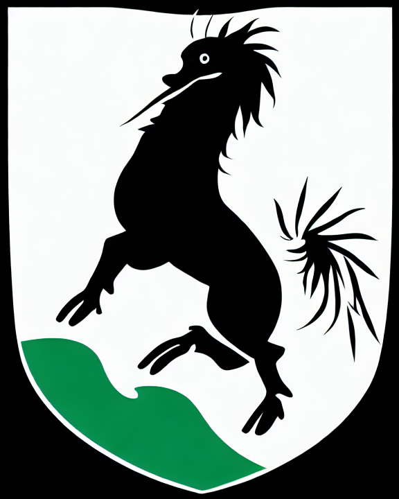
A radical reinterpretation of the Kitzbühel coat of arms as a contemporary abstract alpine brand mark. Preserve only a vertical shield silhouette and the alpine civic identity. Remove medieval ornament, towers, sub-shields, figures, scrollwork, and text. Turn it into a minimal geometric symbol that feels like a cutting-edge identity system. Style direction: single-line icon symbol, continuous stroke, minimal contour drawing, elegant and modern, logo-ready, no ornament. No text, no watermark, no medieval ornament.
Paper Cut
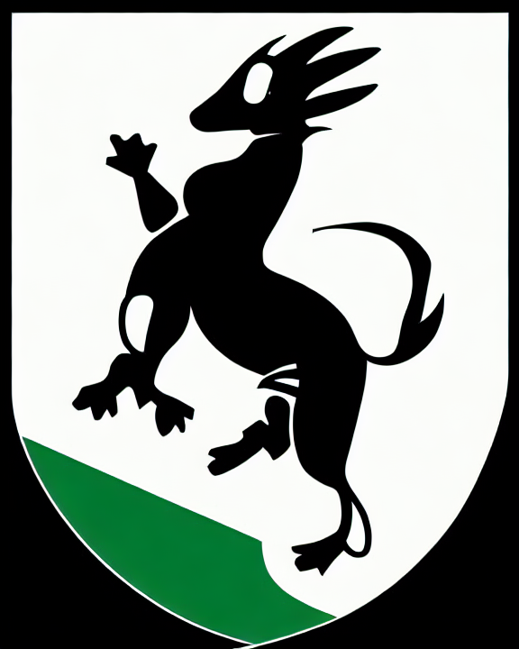
A radical reinterpretation of the Kitzbühel coat of arms as a contemporary abstract alpine brand mark. Preserve only a vertical shield silhouette and the alpine civic identity. Remove medieval ornament, towers, sub-shields, figures, scrollwork, and text. Turn it into a minimal geometric symbol that feels like a cutting-edge identity system. Style direction: paper-cut poster, layered flat shapes, torn edges, tactile yet clean, modern editorial design, abstract civic badge. No text, no watermark, no medieval ornament.
Ink Stamp
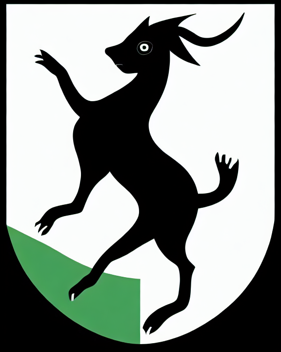
A radical reinterpretation of the Kitzbühel coat of arms as a contemporary abstract alpine brand mark. Preserve only a vertical shield silhouette and the alpine civic identity. Remove medieval ornament, towers, sub-shields, figures, scrollwork, and text. Turn it into a minimal geometric symbol that feels like a cutting-edge identity system. Style direction: monochrome ink-stamp symbol, worn paper texture, strong black form, simple and authoritative, very minimal. No text, no watermark, no medieval ornament.
Negative Space
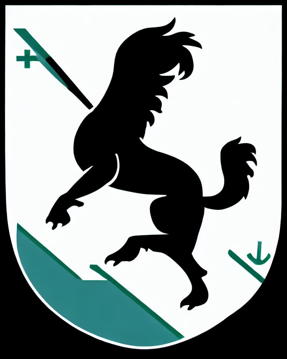
A radical reinterpretation of the Kitzbühel coat of arms as a contemporary abstract alpine brand mark. Preserve only a vertical shield silhouette and the alpine civic identity. Remove medieval ornament, towers, sub-shields, figures, scrollwork, and text. Turn it into a minimal geometric symbol that feels like a cutting-edge identity system. Style direction: negative-space emblem, hollow center, bold outer silhouette, smart and contemporary, pure shape language. No text, no watermark, no medieval ornament.